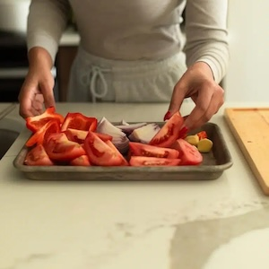
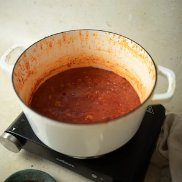
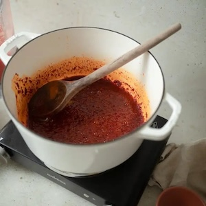
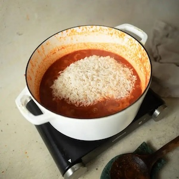
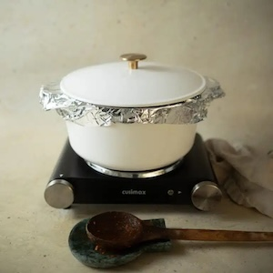
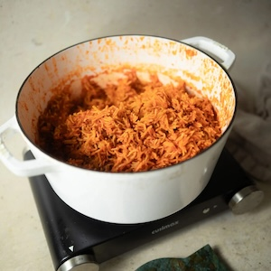
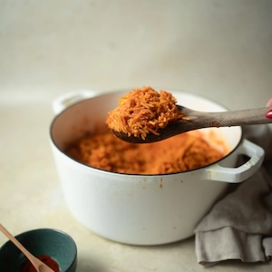
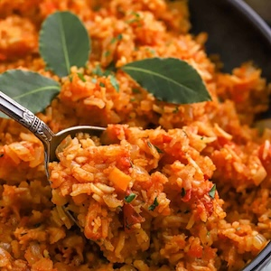

INSTRUCTIONS
Preparation
- Blend the tomato base: Cut the tomatoes, onions, and red bell pepper into chunks, discarding the bell pepper seeds. Add them to a blender with the deseeded scotch bonnet pepper, ginger, and ½ cup of water. Blend until smooth, then set aside.


Cooking
- Cook the sauce: Heat the vegetable oil in a large heavy-bottomed pot over medium heat. Once hot, add in the tomato paste and mix until fully incorporated, dark, and fragrant. Pour in the blended tomato-pepper mixture and cook for 10 minutes, stirring occasionally, until the mixture begins to reduce and deepen in color.

- Season and build flavor: Add the curry powder, nutmeg, thyme, smoked paprika, salt, pepper, and crushed bouillon cubes. Cook for 20 minutes, stirring occasionally, until the stew thickens, reduces by half, and turns a deep red with oil beginning to separate on top.

- Add the rice and simmer: Stir in the rinsed rice, bay leaves, and chicken/beef broth. Bring the pot to a boil, then immediately reduce the heat to low. Cover tightly with foil and a lid, and simmer for 30-45 minutes until the rice is cooked through and the liquid is absorbed.


- Rest and serve: Remove from heat and let the rice rest, covered, for 5-7 minutes before fluffing with a fork.

- Enjoy! Serve warm then store in an airtight container in the refrigerator. Best for 5-7 days.

